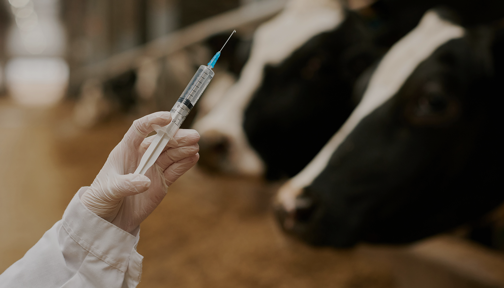
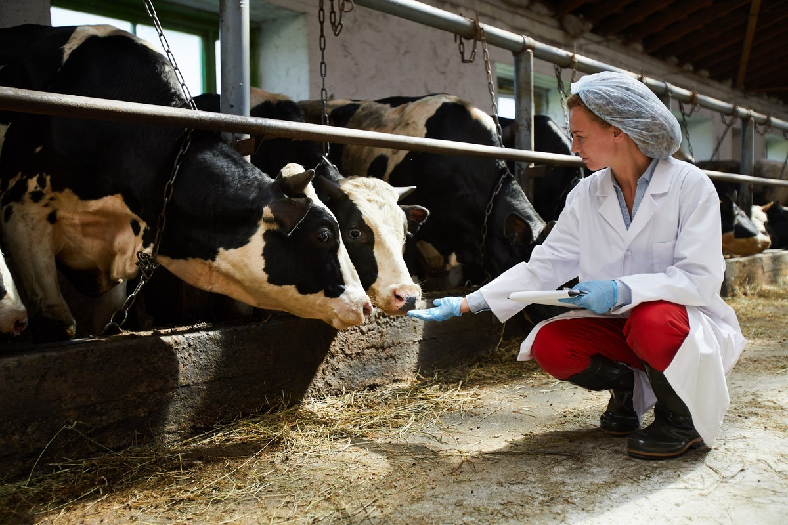
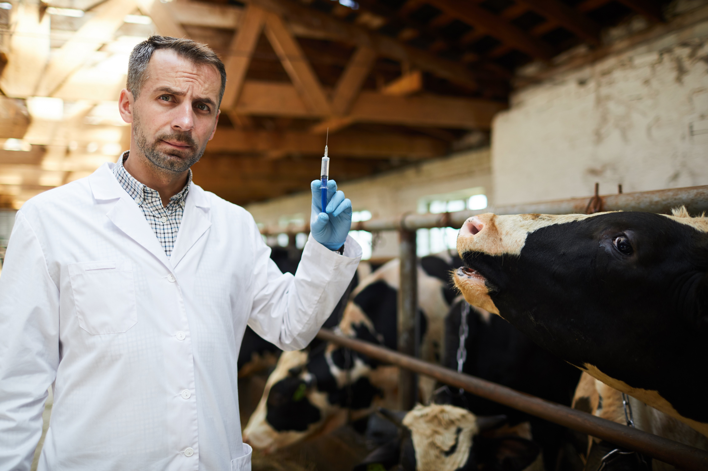

ВАКЦИНАЦИЯ ЖИВОТНЫХ

ПРОФИЛАКТИКА БОЛЕЗНЕЙ


Вакцинация животных — это ключевой метод профилактики болезней и защиты здоровья как самих животных, так и людей от зоонозных инфекций
Как ваш партнер, VVC понимает, что все фермы разные, и стремится удовлетворить ваши потребности. индивидуальные потребности, чтобы улучшить каждое стадо в целом.


Витамины для кошек
Витамины для щенков

Для лошадей витамины

Витамины для крупного рогатого скота
Нобилис® IB 4-91 (по технологии Sphereon®)
Вакцина против инфекционного бронхита кур живая сухая
Узнать большеНобилис® IB 4-91 (по технологии Sphereon®)
Вакцина против инфекционного бронхита кур живая сухая
Узнать большеНобилис® IB 4-91 (по технологии Sphereon®)
Вакцина против инфекционного бронхита кур живая сухая
Узнать больше
-Почему питомец плохо ест? - У него тусклая шерсть и неприятный запах изо рта. - В последнее время он совсем не играет и даже ни на что не реагирует. - Он кашляет, неужели у него простуда? На такие и многие другие волнующие вас вопросы ответит и назначит правильное лечение терапевт.

За чистотой пасти животного необходимо следить также тщательно, как и за его питанием. Чистка зубов ультразвуком – безопасная и безболезненная процедура, которая поможет содержать зубки в чистоте и порядке.

Выявление патологии глаз, лечение и профилактика глазных заболеваний – задача наших квалифицированных офтальмологов. Пусть ваш питомец видит окружающий мир в самых ярких красках!
Говоря о кастрации, профессиональная хирургия дает возможность сделать жизнь удобней, а в случае заболеваний – облегчить состояние животного

Нежная кожа животных подобна коже младенцев. Высыпания, покраснения, волдыри, шелушение – весьма неприятные факторы, сигнализирующие о срочном визите любимца к дерматологу!